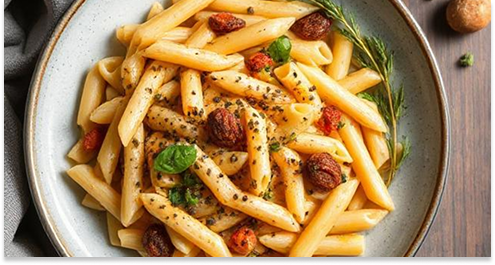
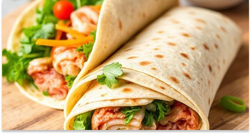
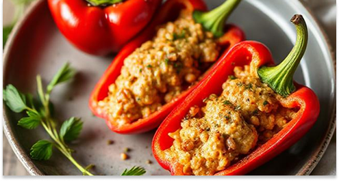

Moeilijkheid
Tijd
Moment

🍝 Romige Pasta met Paturain & Spinazie:
Comfortfood op z'n best. Pasta in een romige saus met spinazie, simpel en heerlijk.
⭐⭐
NIVEAU: GEMIDDELD
⏰
TIJD: 30 MIN

🌯 Paturain Wraps met Gerookte Zalm
Snel klaar en altijd goed. Romige Paturain, zalm en frisse groente – perfect voor lunch of borrel!
⭐
NIVEAU: MAKKELIJK
⏰
TIJD: 15 MIN

🫑 Paturain Gevulde Paprika's
Makkelijk en lekker! De paprika wordt heerlijk zacht in de oven en die romige vulling maakt 'm af.
⭐⭐
NIVEAU: GEMIDDELD
⏰
TIJD: 45 MIN